長期トレンド
JKMとJEPXシステムプライスの推移グラフ
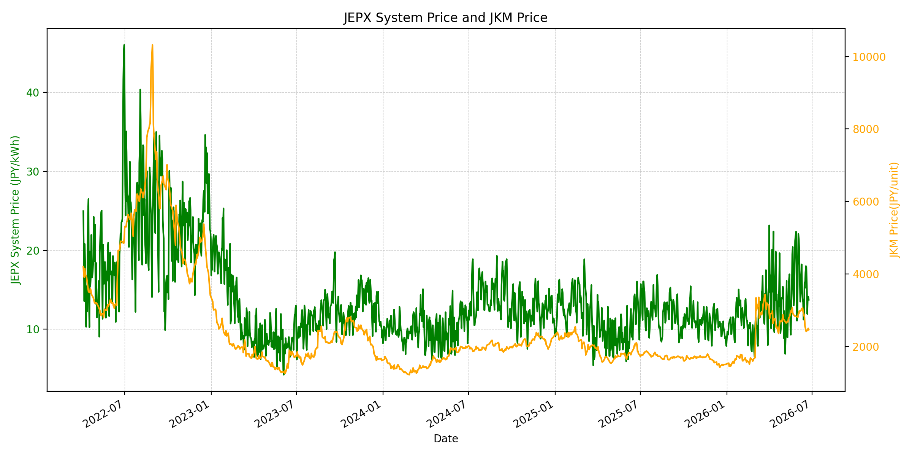
WTIの推移グラフ
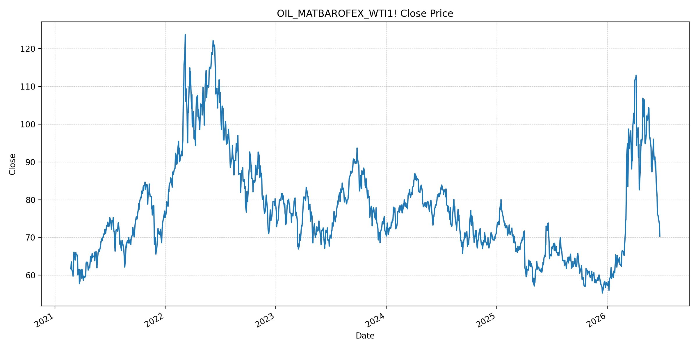
JEPXエリアプライスグラフ（直近一年分）
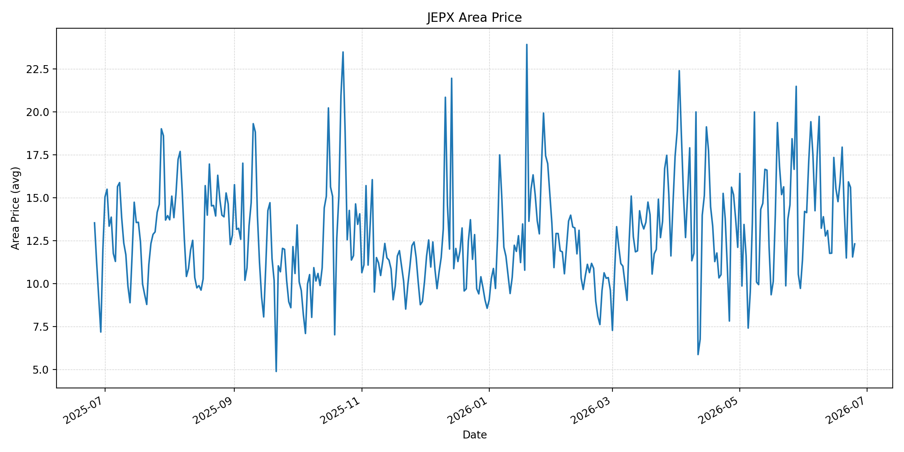
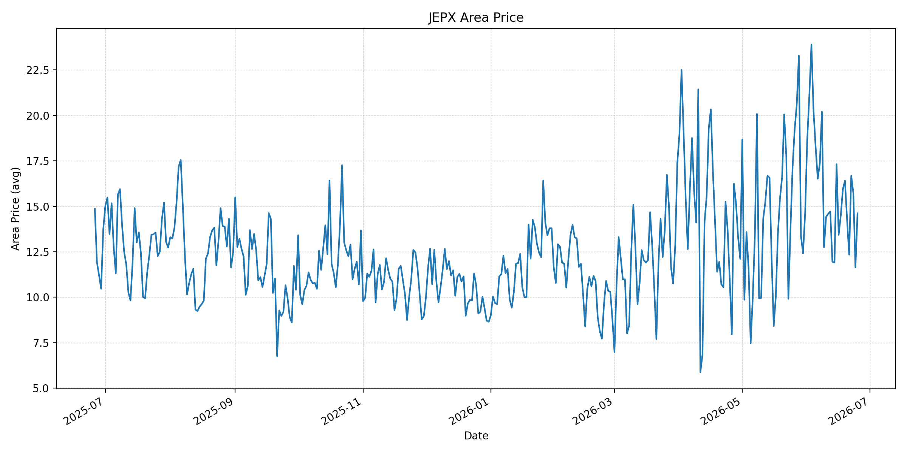
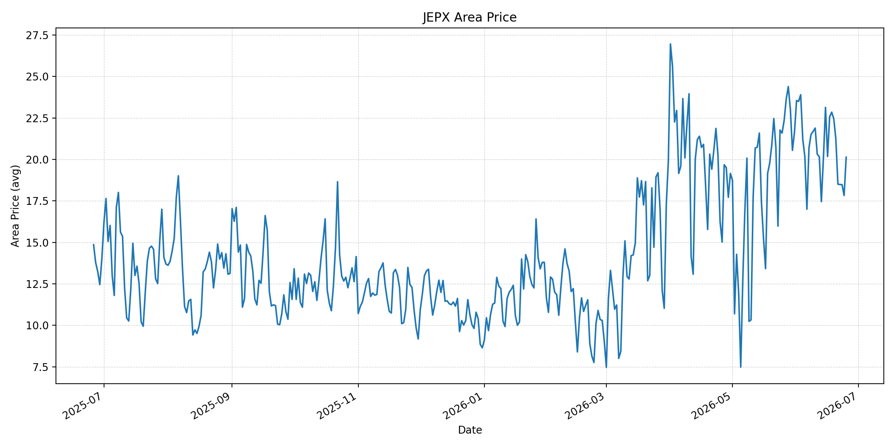
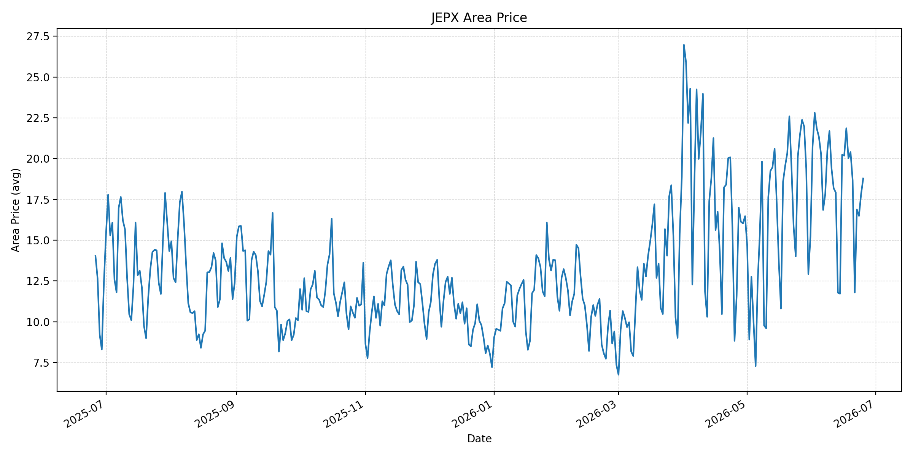
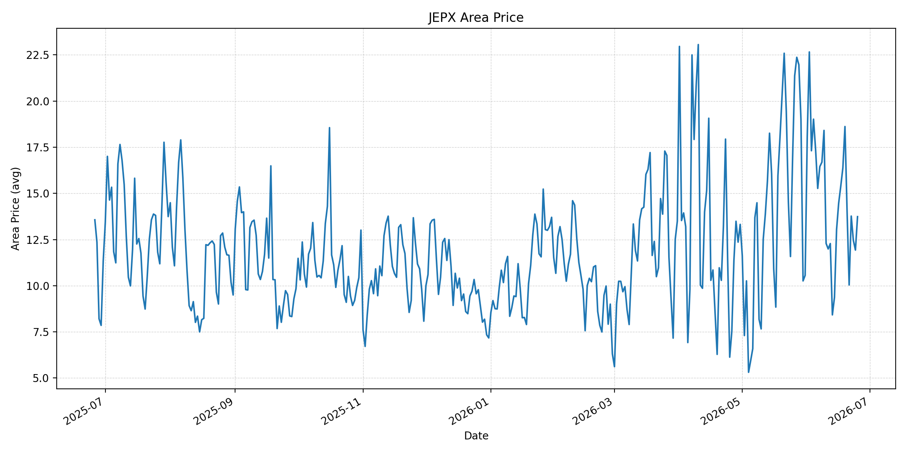
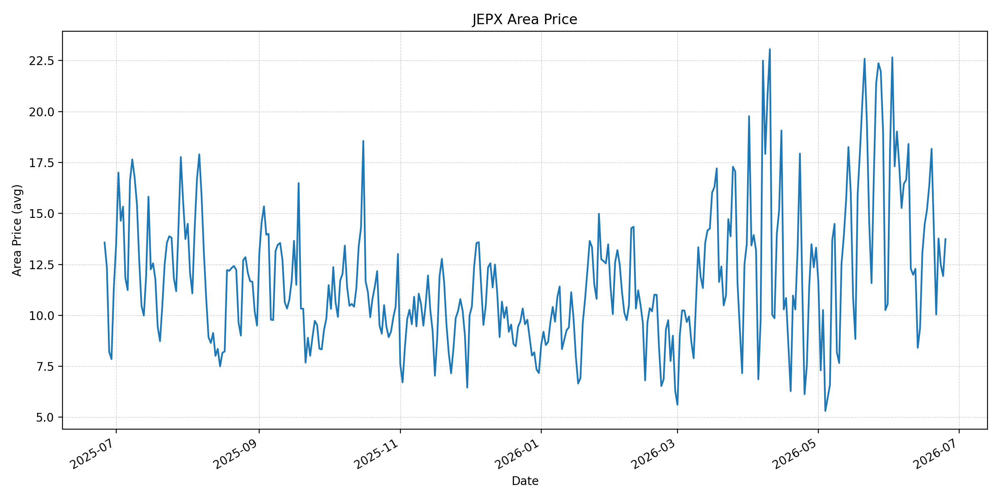
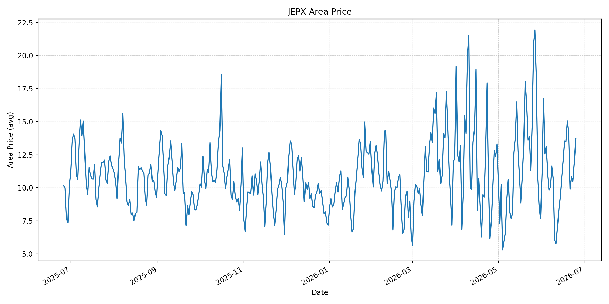
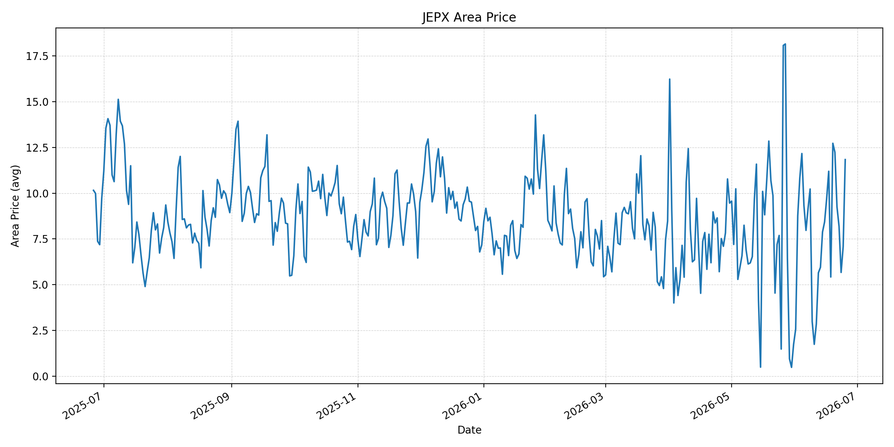
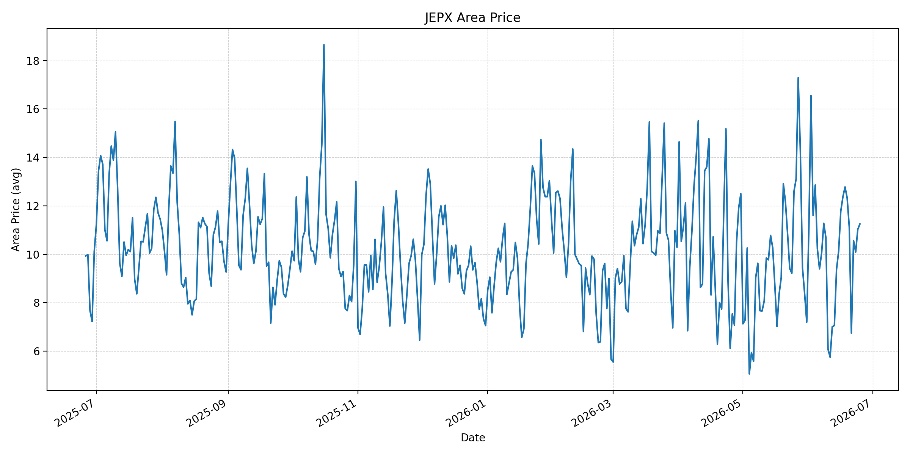
短期トレンド
JKMとJEPXシステムプライスの推移グラフ
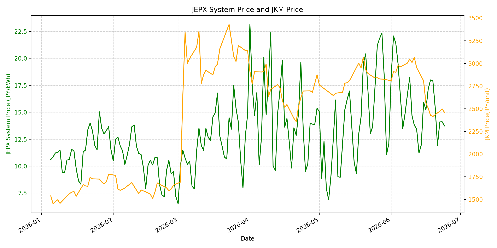
WTIの推移グラフ
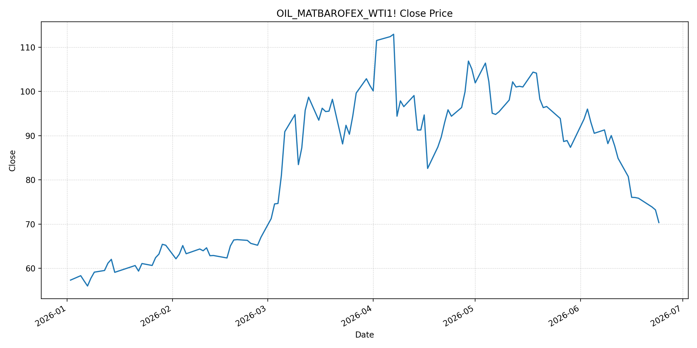
JEPXシステムプライス
JEPXは受渡日ベースの最新非空値で評価しています。最新値は 2026-06-25 分です。先週終値は 2026-06-18 時点の直近値、先月終値は 2026-05-31 時点の直近値で評価しています。
| エリア | 当日価格 | 前日価格 | 前日比（％） | 先週終値 | 先週比（％） | 先月終値 | 先月比（％） | 過去最高値 | 最高値比（％） |
|---|---|---|---|---|---|---|---|---|---|
| システム | 15.28 | 13.73 | 11.29 | 18.00 | -15.11 | 12.10 | 26.28 | 64.06 | -76.15 |
| 北海道 | 12.31 | 11.55 | 6.58 | 15.91 | -22.63 | 11.38 | 8.17 | 73.92 | -83.35 |
| 東北 | 14.62 | 11.65 | 25.49 | 15.93 | -8.22 | 14.64 | -0.14 | 84.92 | -82.78 |
| 東京 | 20.14 | 17.83 | 12.96 | 22.85 | -11.86 | 21.65 | -6.97 | 86.13 | -76.62 |
| 中部 | 18.78 | 17.82 | 5.39 | 20.02 | -6.19 | 15.25 | 23.15 | 52.06 | -63.93 |
| 北陸 | 13.74 | 11.93 | 15.17 | 16.38 | -16.12 | 10.56 | 30.11 | 46.48 | -70.44 |
| 関西 | 13.74 | 11.93 | 15.17 | 16.38 | -16.12 | 10.56 | 30.11 | 46.48 | -70.44 |
| 中国 | 13.74 | 11.93 | 15.17 | 13.48 | 1.93 | 7.66 | 79.37 | 46.48 | -70.44 |
| 四国 | 11.84 | 7.08 | 67.23 | 5.42 | 118.45 | 1.74 | 580.46 | 46.48 | -74.53 |
| 九州 | 11.25 | 11.03 | 1.99 | 12.78 | -11.97 | 7.20 | 56.25 | 40.54 | -72.25 |
LNG先物価格
最新値は 2026-06-24 の LNG(close) です。先週終値は 2026-06-17 時点の直近値、先月終値は 2026-05-29 時点の直近値で評価しています。
| 当日価格 | 前日価格 | 前日比（％） | 先週終値 | 先週比（％） | 先月終値 | 先月比（％） | 過去最高値 | 最高値比（％） |
|---|---|---|---|---|---|---|---|---|
| 2461.00 | 2498.00 | -1.48 | 2506.00 | -1.80 | 2826.00 | -12.92 | 10319.00 | -76.15 |
石油先物価格
最新値は 2026-06-24 の OIL(close) です。先週終値は 2026-06-17 時点の直近値、先月終値は 2026-05-29 時点の直近値で評価しています。
| 当日価格 | 前日価格 | 前日比（％） | 先週終値 | 先週比（％） | 先月終値 | 先月比（％） | 過去最高値 | 最高値比（％） |
|---|---|---|---|---|---|---|---|---|
| 70.34 | 73.21 | -3.92 | 76.01 | -7.46 | 87.36 | -19.48 | 123.70 | -43.14 |
ニュース
イラン情勢に関するニュース
- 2026年6月24日、Guardianは、イスラエル国防相が南レバノンから撤退しないと述べ、米イランの60日間協議を難しくしていると報じました。イラン側はレバノンでの停戦とイスラエル撤退を合意履行の条件として重視しています。 参照: The Guardian, 2026-06-24
- 同報道では、核査察、イラン資金の扱い、ホルムズ通航料をめぐり米イラン間の説明差が残っているとされています。米国は湾岸諸国に安全な石油・ガス輸送を説明している一方、イラン側は最終合意前の核施設査察に慎重です。 参照: The Guardian, 2026-06-24
ホルムズ海峡経由の石油・LNGに関するニュース
- MarketWatchは2026年6月24日、ホルムズ海峡の船舶通航は双方向に回復し、大型タンカーはペルシャ湾向け貨物で日額約28万ドルの用船料を得ていると報じました。通航再開は供給不安を和らげていますが、危険と戦争保険コストは残っています。 参照: MarketWatch, 2026-06-24
- 2026年6月24日、MarketWatchは、トランプ米大統領がイランからホルムズ海峡通航料を課さないと伝えられたと述べ、60日間の覚書では通航料を認めないと報じました。同時に、Brentはイラン戦争開始後の安値圏で推移しています。 参照: MarketWatch, 2026-06-24
ホルムズ海峡経由でない石油・LNGに関するニュース
- 過去24時間で、日本向けの非ホルムズ新規大型調達やLNG長期契約を示す強い追加報道は確認できませんでした。直近の価格下落は、非ホルムズ調達拡大よりもホルムズ経由の物理的な流れの改善が主因です。 参照: MarketWatch, 2026-06-24
- 同じMarketWatch報道は、原油価格が戦争前の水準に戻ってもリスクが消えたわけではなく、通航正常化の進度と米イラン発言が供給リスクを左右するとしています。中東生産者のパイプライン代替は長期論点ですが、短期の日本向け燃料調達を置き換える材料ではありません。 参照: MarketWatch, 2026-06-24
日本国内のイラン戦争に関係するニュース
- 過去24時間で、JEPX制度、国内電力需給ルール、または日本政府の対イラン戦争関連対策を直接変更する主要な新規公表は確認できませんでした。
- 関連する国内材料として、経済産業省は2026年5月20日、2026年度夏季は全エリアで安定供給に最低限必要な予備率3％を確保できるため節電要請を実施しないと発表しています。一方で、国際情勢の変化、異常気象、火力発電所の地域集中はリスクとして明記されています。 参照: 経済産業省, 2026-05-20
インサイト
ニュース事項による日本の電力市場への影響（短期：数日〜1週間）
- JEPXシステムプライスは 15.28 円/kWhで前日比 11.29% と反発しました。ただし先週比は -15.11% で、東京 20.14、中部 18.78 も先週比では低下しており、燃料安とホルムズ通航回復は短期の上値を抑えています。
- OILは 70.34 で前日比 -3.92%、先週比 -7.46%、LNGは 2461.00 で前日比 -1.48% です。通航料なしとの米側発言とタンカー復帰は燃料費見通しを下げる材料ですが、用船料・保険料が高いままなら発電燃料コストへの反映は緩やかです。
- 四国は 11.84 円/kWhで前日比 67.23% と大きく上昇しました。燃料価格だけでは説明しにくい地域差が出ており、数日〜1週間では燃料安よりもエリア別需給、天候、供給力制約がスポット価格の変動要因になります。
ニュース事項による日本の電力市場への影響（長期：1ヶ月〜半年）
- 60日間の覚書で通航料が抑えられ、タンカー交通が回復すれば、日本の燃料調達コストには下押し圧力が続きます。LNGは過去最高値比 -76.15%、OILは -43.14% と危機ピークから大きく低く、長期燃料費の見通しは改善方向です。
- 一方で、Guardianが報じるレバノン停戦、核査察、制裁緩和をめぐる解釈差は、60日後の合意更新リスクとして残ります。1ヶ月〜半年では、スポット原油の下落よりも、通航ルール、保険実務、船腹確保がLNG・石油調達の安定性を決めます。
- 国内では節電要請なしの前提が維持されていますが、システム価格は先月比 26.28% と高く、METIが示す国際情勢と火力発電所の地域集中リスクは残ります。燃料安が進んでも、夏季需要と地域別供給力がJEPXを下支えする可能性があります。